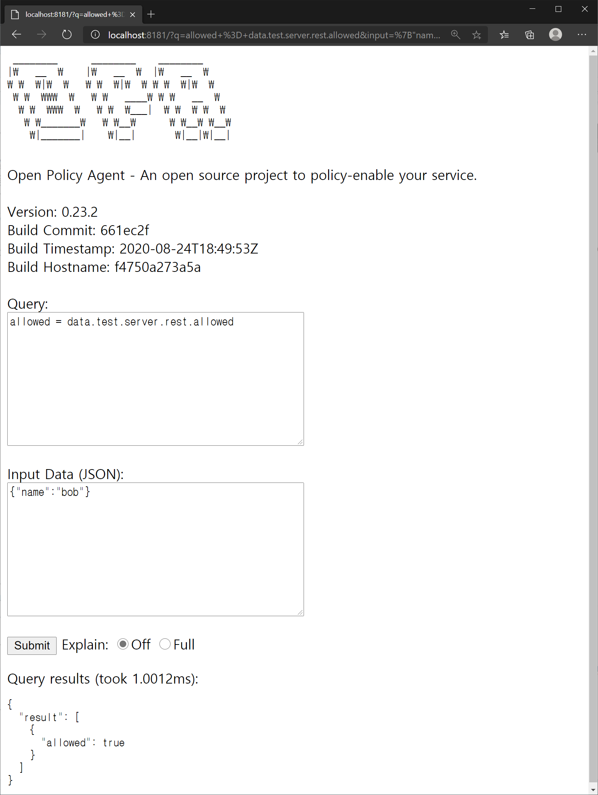
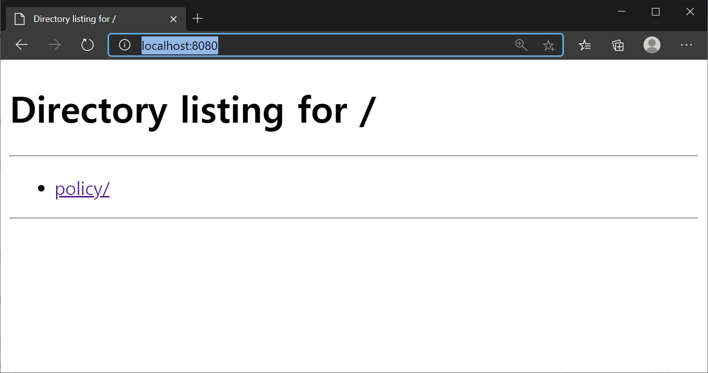
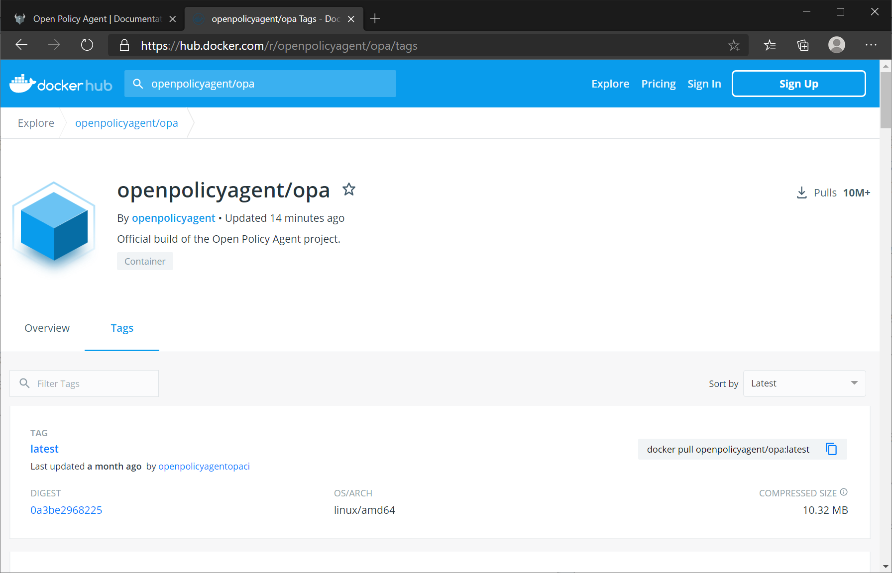

Chap 7. OPA Integrations
Contents
- Utilize OPA REST API server
- How to run the OPA REST API server in a docker and Kubernetes environment
- OPA Go Client Library
- How to link OPA with external data
Methods for integrating OPA with other systems include running separate servers with REST APIs, integrating them with Go libraries into programs written in Go, and using modules compiled as Web assemblies(WASM).
The comparison of each method is shown in Table 7-1.
| Dimension | REST API | Go Lib | WASM (WIP) |
|---|---|---|---|
| Evaluation | Fast | Faster | Fastest |
| Language | Any | Only Go | Any with WASM |
| Operations | Update just OPA | Update entire service | Update service rarely |
| Security | Must secure API | Enable only what is needed | Enable only what is needed |
Table 7-1. A comparison of the different integration choices for OPA4
4 (Source: https://www.openpolicyagent.org/docs/latest/integration/#comparison)
This chapter discusses how to utilize the REST API and how to utilize the Go client library. Web assemblies are described separately in a later chapter.
OPA REST API Server
The OPA REST API server is developed in the Go language. And all tools provided by OPA including REPL, REST API server, and bundle generation tools, are available in a single binary of opa or opa.exe, depending on the platform.
The simplest way to run an OPA REST server is as follows.
$opa run –s <List of files/directories containing policies and data>
Let's test the OPA REST API server by generating simple rules and data. Let's test the OPA REST API server by generating simple rules and data. Briefly describe the contents of policy.rego, assign the name field of the input JSON object to the name variable, and then import the object whose key is the value of the name variable from the data.users object. True is assigned to allowed if the role field of the object is equal to the string "manager". If the role field is different from "manager", the value of allowed is the default value false.
package test.server.rest
default allowed = false
allowed {
name := input.name
data.users[name].role == "manager"
}
Let's create a data file that stores the data.users values. Then save the contents as users.json.
{
"users" : {
"bob": {
"role":"manager"
},
"alice": {
"role":"staff"
}
}
}
To verify that the stored data is loaded normally, you can run the opa run command to output the data as follows: If the data file is written properly, the contents are printed as follows:
$ opa run policy.rego users.json
OPA 0.23.2 (commit 661ec2f, built at 2020-08-24T18:49:53Z)
Run 'help' to see a list of commands and check for updates.
> data
{
"test": {
"server": {
"rest": {
"allowed": false
}
}
},
"users": {
"alice": {
"role": "staff"
},
"bob": {
"role": "manager"
}
}
}
To see if policy.rego works properly, let's assign an object with the name field "bob" to input as follows: After allocating input, you can see that the data.test.server.rest.allowed has been changed to true.
> input := {"name":"bob"}
Rule 'input' defined in package repl. Type 'show' to see rules.
> data.test.server.rest.allowed
true
If both data and policy files are ready, add the –s option to the opa run command to float the REST API server.
$ opa run -s policy.rego users.json
{"addrs":[":8181"],"diagnostic-addrs":[],"insecure_addr":"","level":"info","msg":"Initializing server.","time":"2020-10-07T22:07:37+09:00"}
Since the OPA server started with 8181 ports, let's run the query using a browser as shown in Figure 7-1. You can access the OPA server by typing localhost:8181 as a URL in the browser window (if localhost does not work, you can access it at 127.0.0.1:8181). Let's enter {"name":"bob"} assigned by REPL in the Input Data section and allowed = data.test.server.rest.allowed in the Query section. Unlike Repl, the result value must be assigned to the variable to be included in the result object, and the result is the same even if the allocation speaker := is used instead of =.
After input is entered, click the [Submit] button to see the result value in the result field of the JSON object.

Figure 7-1. Connecting to the OPA server from a web browser
This time, let's request a query with the REST API on the OPA server using curl. The same result can be obtained by executing the command.
$ curl localhost:8181/v1/data/test/server/rest/allowed –d {\"input\":{\"name\":\"bob\"}}
{"result":true}
In order to pass the input object to the curl, the input objects can be saved to a file if the escaping is uncomfortable or the input objects are too large. Let's save the following as input.json and call the API in the same curl.
{"input":{"name":"bob"}}
To call a curl with contents of a file as input stream, you can specify the –d factor in the form @
$ curl -d @input.json localhost:8181/v1/data/test/server/rest/allowed
{"result":true}
Running an OPA server with HTTPS
In most cases, the OPA server will run on the internal network within the firewall. In recent micro-service environments, security is often applied between services in internal networks, and HTTPS must be applied unconditionally if it is required to be disclosed to external networks. In the future, HTTPS application to API servers is essential because regular HTTP connections will not be available in web browsers at all. For sources related to HTTPS applications, see chap7/https.
HTTPS application requires a TLS certificate. HTTPS validates TLS certificates through the Certificate Authority (CA). It is convenient to use a self-signed certificate signed with a private key in a test environment, because a typical TLS certificate may require the cost of issuing the certificate and an internet connection to the certificate authority. However, it should be noted that using self-signed certificates for commercial services can lead users to misunderstand that they are required to accept unverified certificates unconditionally, and that commercial services should not use self-signed certificates because browsers show warning messages. Let's use self-signed certificates for testing purposes only.
First of all, let's issue a self-signed certificate as follows. The following openssl genrsa command generated a private key with a size of 2048 bits to sign the certificate: Private keys are generated randomly, so deleting and re-generating them produces keys with different values. After the key was generated, the certificate was generated, and the expiration date was set to 10 years (3650 days) for readers to use the source provided by the book. When generating the certificate, many questions were asked, but the country was set to KR, the common name was set to localhost, and the remaining fields were left blank. The generic name of the credential is typically set to the fully qualified domain name (FQDN), which most specifically represents the host address, and the email of the certificate manager is set together.
$ openssl genrsa -out private.key 2048
Generating RSA private key, 2048 bit long modulus (2 primes)
.............................................................+++++
.................................................................................................+++++
e is 65537 (0x010001)
$ openssl req -new -x509 -sha256 -key private.key -out public.crt -days 3650
... (ellipsis) ...
-----
Country Name (2 letter code) [AU]:KR
State or Province Name (full name) [Some-State]:
Locality Name (eg, city) []:
Organization Name (eg, company) [Internet Widgits Pty Ltd]:
Organizational Unit Name (eg, section) []:
Common Name (e.g. server FQDN or YOUR name) []:localhost
Email Address []:
When you start the server using the issued certificate, you can specify the certificate file and the private key file used to generate the certificate in the tls-cert-file and tls-private-key-file arguments as follows: Even if the certificate is issued and used by an authorized certificate authority, only the process of issuing it is different, but the key file and the certificate file used to generate the certificate are specified.
$ opa run -s --tls-cert-file public.crt --tls-private-key-file private.key policy.rego users.json
{"addrs":[":8181"],"diagnostic-addrs":[],"level":"info","msg":"Initializing server.","time":"2021-01-30T22:20:21+09:00"}
Let's open another shell, change the curl request address from localhost to https://localhost, and send the request to the server. Contrary to expectations, an error complaining a self-signed certificate will occur.
$ curl -d @input.json https://localhost:8181/v1/data/test/server/rest/allowed
curl: (60) SSL certificate problem: self signed certificate
More details here: https://curl.haxx.se/docs/sslcerts.html
curl failed to verify the legitimacy of the server and therefore could not
establish a secure connection to it. To learn more about this situation and
how to fix it, please visit the web page mentioned above.
In HTTPS operation, the operating system or browser basically has a list of top certification authorities (Symantec, Digicert, etc.) and it trusts only the certification authorities or certificates signed by them. Because a self-signed certificate is a certificate signed with a randomly generated key, curl et al. cannot verify them by default. Therefore, self-signed certificates can encrypt communications, but they cannot verify the identity of the certificates used for communications. Therefore, if it is not clear that the certificate file is provided by a trusted target, it should not be allowed recklessly, but it can be used for testing purposes.
The –k option (long as the --insecure option) for curl allows access to HTTPS even if the certificate is not verifiable. Certificates from authorized certification bodies are verifiable and do not require the –k option. If you add the –k option to the curl, you will see the following results:
$ curl -k -d @input.json https://localhost:8181/v1/data/test/server/rest/allowed
{"result":true}
Configure OPA REST API Server
Structure of the OPA Configfile
OPA config files can be written in JSON or YAML, and YAML provides better readability. The OPA config file has the following structure: The services section first contains connection information when external HTTP services need to be accessed for bundle polling, etc. in OPA. The example declares a service called example, URL http://localhost:8080/policy/v1, and the timeout waiting for a response is 5 seconds. While the services section seems to declare which ports OPA services will use, the ports that OPA servers will use can only be set by an argument when running operrun –s, and the services declared in the services section define endpoints for the bundled servers or the state servers that update the OPA server status.
The labels section is used to label the OPA server for management. In the labels section, you can define the desired label, and the contents of the label are included in the policy evaluation result log or status information. Therefore, recording information on the operating environment, development environment, and management department using labels will greatly help analyze logs and status information in the future, and if there are multiple servers, information on servers related to each other can be filtered through labels.
The bundle section contains settings for updating policies and data of the OPA server by polling bundles in external services. In the example, we declared a bundle called example, which downloads a resource called bundle/example/bundle.tar.gz of the example service. The URL to be actually polled is http://localhost:8080/policy/v1/bundles/example/bundle.tar.gz, which combines the URL of the service and the path of the resource. The polling cycle is at least 60 seconds and up to 120 seconds, and the bundle is polled and updated once every 60 to 120 seconds. The persist sets whether to store the polling bundle on disk, and unless the storage location is set separately, it is stored in the bundles directory under the .opa directory where the OPA server was executed. If the signature contains a signature from the bundle downloaded from the remote service, you can specify a key to verify the signature. The verification key is defined in the keys section and may refer to the corresponding key in the keys section as the key_id. In the keys section, a public key to be used to verify the bundle can be defined. In this example, the algorithm was set to RS512 because the bundle signed with the RS512 algorithm was used, and the contents of the previously generated public_key.pem were opened and copied with a text editor. To specify a string consisting of multiple lines in YAML as a value, write | (a character used as an OR or Unix pipe symbol in a programming language) to recognize the value from the next line to the front of the blank line.
services:
example:
url: http://localhost:8080/policy/v1
response_header_timeout_seconds: 5
lables:
region: prod
depart: dev1
service: example
bundles:
example:
service: example
resource: bundles/example/bundle.tar.gz
persist: true
polling:
min_delay_seconds: 60
max_delay_seconds: 120
signing:
keyid: example_key
keys:
example_key:
algorithm: RS512
key: |
-----BEGIN PUBLIC KEY-----
MIIBIjANBgkqhkiG9w0BAQEFAAOCAQ8AMIIBCgKCAQEAxtXx9HIydGa90/0SIlyi
G6uJS3xTZqr+IfIA1YZrgdhpIJSIW4Wj19R56X6tzr5AMw4Z/FfcR7E+5/9Q30y9
8bvCDMM+58RPIhL4fyHLZeLR2ysMHgXt3aQ1epTKJA+AP2ndQu7nzYJ/ZgIzQkGO
3AR9IfYva5D9x9d5KxsBS6S5FyAfT9zspWtN9OO2Vu8jH9G/vWnLagYD8hXfTiaa
U+ujkB0OSlOOWDVbXPO0Aw/z7GKyc9Zg/TF2Vq8/SJjw0j1FlgJCC+tXBx8SYXuQ
TxsjpMHAGiWg5slt+FpvSQEcZjPlvUN+tnvsUxfnVpyMDmxKMvdRtzAy0BaL/wpe
GQIDAQAB
-----END PUBLIC KEY-----
decision_logs:
console: true
caching:
inter_query_builtin_cache:
max_size_bytes: 10000000
The decision_logs section sets the contents of the OPA's policy evaluation result log. The log may be transmitted to a remote server defined in the service, or the policy result log may be output to the console. Here, logs are set to be output to the console.
In addition, there is a status section that sets the state of the OPA server to be transmitted to an external server, and a discovery section that integrates external bundles, policy decision logs, and status servers to dynamically find them.
Apply configurations when starting REST server
To specify the OPA configuration file (opaconf.yaml in this example) when starting the REST server, use the –c option to run as follows.
$ opa run –s –c opaconf.yaml
Currently, opaconf.yaml receives bundles from http://localhost:8080/policy/v1, so if executed as above, an error occurs because the bundle cannot be found. Let's set aside the HTTP server that provides the bundle and try to polling the bundle periodically through the REST API. A server that serves bundles can be easily started with a simple command. Python 3.x is used to execute the command, so Python must be installed first, and Python installation is simple, so it is not covered in this book.
First, in order to ensure that the bundle is located in the policy/v1 path, a path is created so that the v1 directory is located under the policy directory. If you are using a window cmd shell, it is easy to create a directory at once using the “mkdir -p policy\v1” command, and in Linux or MacOS, use the “mkdir -p policy/v1”. After the directory is created, do not move it, but copy the bundle to use under that policy/v1 directory. In this book, bundle signed RS512 was used for opaconf.yaml, so bundle.tar.gz signed RS512 was copied. When you finish copying, let's do it as follows.
$ python3 -m http.server --bind localhost 8080 --directory . Serving HTTP on ::1 port 8080 (http://[::1]:8080/) ...
If it works properly, the policy directory looks at the top when accessed by browser as shown in Figure 7-2. Let's click on the policy directory and v1 directory one by one to see if a bundle file exists.

Figure 7-2. Accessing the Bundle Server using Web browser
For simplicity, we started the bundle server as it was guided on the OPA usage page, but when applied in production, it is recommended to configure web servers such as Apache and nginx or to develop and use simple web servers in programming languages such as node.js.
If the bundle server works well, let's launch the OPA server as follows. It can be seen that the OPA server starts and bundles are periodically polled.
$ opa run -s -c opaconf.yaml
{"addrs":[":8181"],"diagnostic-addrs":[],"level":"info","msg":"Initializing server.","time":"2020-11-05T10:19:10+09:00"}
{"level":"info","msg":"Starting bundle downloader.","name":"example","plugin":"bundle","time":"2020-11-05T10:19:10+09:00"}
{"level":"info","msg":"Starting decision logger.","plugin":"decision_logs","time":"2020-11-05T10:19:10+09:00"}
{"level":"info","msg":"Log upload skipped.","plugin":"decision_logs","time":"2020-11-05T10:19:10+09:00"}
{"level":"info","msg":"Bundle downloaded and activated successfully.","name":"example","plugin":"bundle","time":"2020-11-05T10:19:10+09:00"}
{"level":"info","msg":"Bundle downloaded and activated successfully.","name":"example","plugin":"bundle","time":"2020-11-05T10:21:08+09:00"}
...
Let's open another shell and send the request to the OPA server in curl. The request is the same as the request sent earlier in this chapter.
$ curl localhost:8181/v1/data/test/server/rest/allowed -d {\"input\":{\"name\":\"bob\"}}
{"decision_id":"f7b082e5-16b5-4368-bae3-6752ebf4179a","result":true}
As a response, we can see that the result:true has been returned the same as before, and that the decision_id has been returned together in the form of uuid.
If you look at the shell that started the OPA server, you can see that the following contents have been output.
{"client_addr":"[::1]:61080","level":"info","msg":"Received request.","req_id":1,"req_method":"POST","req_path":"/v1/data/test/server/rest/allowed","time":"2020-11-05T10:34:01+09:00"}
{"client_addr":"[::1]:61080","level":"info","msg":"Sent response.","req_id":1,"req_method":"POST","req_path":"/v1/data/test/server/rest/allowed","resp_bytes":68,"resp_duration":8.0402,"resp_status":200,"time":"2020-11-05T10:34:01+09:00"}
We briefly checked how to set up the OPA server. For more information on settings, see the official document at https://www.openpolicyagent.org/docs/latest/configuration/).
Run OPA server in Docker and Kubernetes Environment OPA provides an official docker image, so you can easily float the OPA server using docker or Kubernetes. If you search for openpolicyagent/opa in the docker hub, you can find the OPA docker image as shown in Figure 7-3. If you check the description of the OPA official docker image, the images shown in Table 7-2 are provided. In the development process, openpolicy agent/opa:latest-debug with a built-in shell for debugging can be used. openpolicyagent/opa:latest-rootless can be used rather than openpolicyagent/opa:latest for application in the production environment. However, it is better to use a rootless image that operates as a server with an account other than root because security check tools can complain of it as a security vulnerability.

Figure 7-3. OPA docker image (hub.docker.com/r/openpolicyagent/opa)
| Image Tag | Description |
|---|---|
| openpolicyagent/opa: |
The standard OPA image |
| openpolicyagent/opa: |
Includes a shell and is based on the lightweight distroless images |
| openpolicyagent/opa: |
Sets the USER to a non-root value |
| openpolicyagent/opa: |
Contains a statically linked OPA executable |
| openpolicyagent/opa: |
Include an Envoy External Authorization server |
Table 7-2. Types of OPA docker images provided through docker hubs. (source: https://hub.docker.com/r/openpolicyagent/opa)
Run in a Docker Environment.
Although it is simple to execute OPA through dockers, it is necessary to consider ways to deliver policies and data so that OPA containers can recognize them. The easiest way is to connect the local directory to the container and then allow the OPA container to load the file.
Docker installation is required first to run the OPA server on the docker. To use docker, you can install the docker desktop in the Windows or Mac OS environment, and the docker engine package in the Linux environment. Hyper-V must be enabled to install docker desktops in a Windows environment, but unless it is the latest update of Windows 10, Hyper-V is not enabled in the Home version and the docker desktop is not available. If you are a Windows 10 Home version user, let's update to the latest build. This book will not cover detailed docker installation instructions, so see https://www.docker.com/get-started.
Let's run OPA on docker. For related sources, refer to the chap7/docker directory. First of all, the directory (c:\opabook\chap7\docker\rest in this example) containing the two files, which is policy.rego and users.json, was mounted on /rest of the container, and ran the container using openpolicyagent/opa:late-rootless image. In addition, run/rest/policy.rego/rest/users.json was handed over as an argument in the image, and the standard input/output of the container was connected to the shell with the –it option. When the container is executed, you can see the same OPA shell as when the OPA is directly executed as a binary as follows.
$ docker run -it –v c:\opabook\chap7\docker\rest:/rest openpolicyagent/opa:latest run /rest/policy.rego /rest/users.json
OPA 0.23.2 (commit 661ec2f, built at 2020-08-24T18:49:17Z)
Run 'help' to see a list of commands and check for updates.
>
Enter the data command and the result will be output if the file is loaded normally. If you enter Ctrl + D to terminate the shell, you can see the following prompt, and pressing y ends the process.
Do you want to exit ([y]/n)? y
Let's run the OPA container with the REST API server. The OPA server may be started by running with open-s
$ docker run –p 8100:8181 -v c:\opabook\chap7\docker\rest:/rest openpolicyagent/opa:latest-rootless run -s /rest/policy.rego /rest/users.json
{"addrs":[":8181"],"diagnostic-addrs":[],"insecure_addr":"","level":"info","msg":"Initializing server.","time":"2020-10-11T11:52:20Z"}
In the above example, the 8181 port was mapped to the 8000 port of the host in the container. When tested with curl as follows, the same results as when the server was run with binary without container will be returned.
$ curl localhost:8000/v1/data/test/server/rest/allowed -d {\"input\":{\"name\":\"bob\"}}
{"result":true}
Even if you enter Ctrl + C from the shell connected to the OPA server container and get out of the shell, it will still work well if you request the same in curl again because it was operated in daemon mode with the opa run -s command.
To shut down the running server, you can check the running container with the docker ps command as follows, stop the container with the docker stop, and delete the container with the docker rm command. In the example below, 8dc8394f6058 is a container identifier and is a randomly generated value, so it depends on the environment. Therefore, when you execute, the container identifier that is handed over to the docker stop or docker rm must be changed according to the container identifier output as a result of the docker ps command.
$ docker ps
CONTAINER ID IMAGE COMMAND CREATED STATUS PORTS NAMES
8dc8394f6058 openpolicyagent/opa:latest-rootless "/opa run -s /rest/p…" 9 minutes ago Up 9 minutes 0.0.0.0:8000->8181/tcp thirsty_bartik
$ docker stop 8dc8394f6058
8dc8394f6058
$ docker rm 8dc8394f6058
8dc8394f6058
By executing the docker ps command again, it can be confirmed that the container has been deleted. Following the example, if the port is already occupied, it is highly likely that another container was previously started on the same port, so let's check with the docker ps command.
$ docker ps
CONTAINER ID IMAGE COMMAND CREATED STATUS PORTS NAMES
Run in a Kubernetes Environment
In a Kubernetes environment, it is more convenient to set policies and data files to be imported through bundles rather than copied and connected to volumes. This book briefly explains how to operate an OPA server in a Kubernetes environment. For related sources, refer to the chap7/kubernetes directory.
In the previous example, the bundle server was started by binding to the localhost address, and the bundle server's binding address should be specified as an IP that can be routed from the pods in the Kubernetes. If you test on a PC, you can specify the IP returned with the ifconfig (Linux or MacOS) or ipconfig (Window) command, and if you test on an external server, check the IP address of the server operating the bundle server. In the case of the author, since it is a PC connected through an Internet router and the IP of the PC is 192.168.0.10, the bundle server was executed as follows. To verify that the specified IP is correct, enter it in the form of http://192.168.0.10:8080 to access it. (It needs to be changed to suit the IP of the PC you use)
$ python3 -m http.server --bind 192.168.0.10 8080 --directory .
If the bundle server works well, try running the OPA server in Kubernetes with the kubectl command. First, a namespace that can separate and manage resources related to the OPA server is created under the name opa.
$ kubectl create namespace opa
Once the namespace is created, copy the opaconf.yaml used in the previous example and replace the IP with the bundle server IP.
services:
example:
url: http://192.168.0.10:8080/policy/v1
response_header_timeout_seconds: 5
....
Then create a configmap named opaconf so that opaconf.yaml can be used in Kubernetis. In this case, the previously created namespace is designated with the –n option.
$ kubectl -n opa create configmap opaconf --from-file opaconf.yaml
To ensure that the configmap is properly created, try executing the following command.
$ kubectl –n opa describe configmap opaconf
Name: opaconf
Namespace: opa
Labels: <none>
Annotations: <none>
Data
====
opaconf.yaml:
----
services:
example:
url: http://localhost:8080/policy/v1
response_header_timeout_seconds: 5
...
If a configmap has been created, a service for the OPA server must be created. Write and save the following contents under the name of service.yaml. In this book, services were exposed through Cluster IP, but if there is a load balancer available in Kubernetis, it is better to expose the service port with Load Balancer.
kind: Service
apiVersion: v1
metadata:
name: opa
labels:
app: opa
spec:
type: ClusterIP
selector:
app: opa
ports:
- name: http
protocol: TCP
port: 8181
targetPort: 8181
You can create a service by executing the following command.
$ kubectl –n opa apply –f service.yaml
Let's check if the service is well created with the following command.
$ kubectl -n opa get svc
NAME TYPE CLUSTER-IP EXTERNAL-IP PORT(S) AGE
opa ClusterIP 10.107.90.72 <none> 8181/TCP 15s
When a service is created, a deployment for the OPA server container must be created. Write the following and save it as deployment.yaml.
apiVersion: apps/v1
kind: Deployment
metadata:
name: opa
labels:
app: opa
spec:
replicas: 1
selector:
matchLabels:
app: opa
template:
metadata:
labels:
app: opa
name: opa
spec:
containers:
- name: opa
image: openpolicyagent/opa:latest
ports:
- name: http
containerPort: 8181
args:
- "run"
- "--ignore=.*"
- "-s"
- "-c"
- "/opaconf/opaconf.yaml"
volumeMounts:
- readOnly: true
mountPath: /opaconf
name: opaconf
volumes:
- name: opaconf
configMap:
name: opaconf
You can create an OPA deployment by executing the following command.
$ kubectl –n opa apply –f deployment.yaml
Once the deployment is created, check with the following command to see if a pod containing a container has been properly created in Kubernetes.
$ kubectl -n opa get pod
NAME READY STATUS RESTARTS AGE
opa-d78bf44fc-5t9nv 1/1 Running 0 15m
The log can be checked with the kubectl logs command using the pod name that appears as a result of the kubectl get pod command. If the server operates normally, a log similar to the previous example will appear.
$ kubectl -n opa logs opa-d78bf44fc-5t9nv
{"addrs":[":8181"],"diagnostic-addrs":[],"level":"info","msg":"Initializing server.","time":"2020-11-05T12:36:21Z"}
{"level":"info","msg":"Starting bundle downloader.","name":"example","plugin":"bundle","time":"2020-11-05T12:36:21Z"}
{"level":"info","msg":"Starting decision logger.","plugin":"decision_logs","time":"2020-11-05T12:36:21Z"}
{"level":"info","msg":"Log upload skipped.","plugin":"decision_logs","time":"2020-11-05T12:36:21Z"}
{"level":"info","msg":"Bundle downloaded and activated successfully.","name":"example","plugin":"bundle","time":"2020-11-05T12:36:21Z"}
Currently, the service exposes the port to Cluster IP, so it cannot be accessed from outside Kubernetes from the OPA server. Let's perform port forwarding in the opa service with the next command.
$ kubectl -n opa port-forward service/opa 8181:8181
Forwarding from 127.0.0.1:8181 -> 8181
Forwarding from [::1]:8181 -> 8181
Let's open another shell and test it with curl to see if the service works well. It can be seen that it works well.
$ curl localhost:8181/v1/data/test/server/rest/allowed -d {\"input\":{\"name\":\"bob\"}}
{"decision_id":"bfa3be4a-66d8-4c5b-bd38-444bd99b34f0","result":true}
Once the test is complete, enter Ctrl+C on the shell running the kubectl port-forward to stop port forwarding, and delete the generated kubernetes resources using the following commands. If all commands have been successfully completed, all resources generated by Kubernetis during the test process will be deleted. If an error occurs on the way, correct the problem, delete the resources, and retest.
$ kubectl –n opa delete deployment opa
deployment.apps "opa" deleted
$ kubectl –n opa delete service opa
service "opa" deleted
$ kubectl –n opa delete configmap opaconf
configmap "opaconf" deleted
$ kubectl delete namespace opa
namespace "opa" deleted
Integrate OPA into the Application with the Go Client Libraries
This time, let's run OPA using the Go client library. First of all, the Go compiler should be installed, and it is recommended to install the version above 1.13 as much as possible. Go compilers can download the latest versions for each platform by accessing https://golang.org/dl.
First, let's create a directory to use as a project. After creating the opa_go_hello directory, the opa_go file was created with the following contents using an editor.
package main
import (
"context"
"fmt"
"log"
"github.com/open-policy-agent/opa/rego"
)
func main() {
input := map[string]interface{}{
"name": "bob",
}
opaFiles := []string{
"policy.rego",
"users.json",
}
queryStr := "data.test.server.rest.allowed"
r := rego.New(
rego.Query(queryStr),
rego.Load(opaFiles, nil),
)
ctx := context.Background()
query, err := r.PrepareForEval(ctx)
if err != nil {
log.Fatalf("unable to prepare for eval: %s", err)
}
rs, err := query.Eval(ctx, rego.EvalInput(input))
if err != nil {
log.Fatalf("unable to eval: %s", err)
}
fmt.Printf("rs = %+v\n", rs)
fmt.Printf("query result = %+v\n", rs[0].Expressions[0].String())
}
The contents of the code are as follows. First, "context", "fmt", and "log" are modules basically provided in the Go language. Then, the OPA module "github.com/open-policy-agent/opa/rego" was imported.
Input variables were declared and assigned as a map, and the key type of the map is string and the value type of the map is interface{} (which can indicate any type of variable similar to Java's object type or C/C++'s void*). The Go language basically provides a module for JSON parsing, which returns to the map [string] interface{} when unmarshalling the JSON. That is, the input variable contains the value obtained by unmarshalling the input.json of the previous example. Similarly, oppaFiles is an array of strings containing policies and data file paths to load. Finally, the queryStr variable is a string containing a query to be requested from the OPA.
Then call rego.New to initialize the rego, which passes the query string to rego.Query to generate a query and loads the policy and data files using rego.Load. The second argument of rego.Load is a filtering function that can only filter functions that satisfy conditions such as specific extensions in the file list, and in this example, filtering is not required, so it has passed nil. For how to use functions such as rego.New, refer to the godoc page about opa modules, https://godoc.org/github.com/open-policy-agent/opa/rego.
Next, the context is created, and if settings such as timeout are not required, create a basic context using context.Background(). Pass the context created by the initialized Rego engine and complete preparations for evaluation are completed.
Finally, the evaluation is performed, the result is assigned to the rs variable, and then call fmt.Printf to format and output the results. The printf's %+v indicator is an indicator that cannot be seen in the printf series of rough numbers in other languages, with %v outputting in a format suitable for each type, and %+v outputting structures including field names.
Once the code has been written, let's run it. Before executing the code, the OPA module must be installed, and it can be managed as project dependency through the go module, or it can be installed locally through the go get command.
After saving the source, the go module is initialized by executing the following command.
$ go mod init example.com/opahello
After the module is initialized, the result can be confirmed by executing it as follows. If there is an error, let's check the code again.
$ go run opahello.go
rs = [{Expressions:[true] Bindings:map[]}]
query result = true
If you look at the execution results, the results are included in the Expressions section. Bindings is the part where the variable name is the key if a variable to contain the query result is specified, such as when accessing the OPA server through the web. Let's change the query in the source code from "data.test.server.rest.allowed" to "x = data.server.rest.allowed" and try again. It may be seen that the value of key x is set to true in the Bindings map.
$ go run opahello.go
rs = [{Expressions:[true] Bindings:map[x:true]}]
query result = true
It is recommended that managing dependencies with the go module that the code to be applied in the production environment. However, if it is simply for test purposes, it would be more convenient to install a library locally. If you want to install it without managing it as a go module, let's install it as follows with go get.
$ go get –u github.com/open-policy-agent/opa/rego
After installing the library, let's run it with the following command. The execution result is the same as the case of applying the go module.
$ go run opahello.go
rs = [{Expressions:[true] Bindings:map[x:true]}]
query result = true
How to integrate OPA with external data.
The official OPA documentation presents five ways to integrate OPA with external data as shown in the following table. Let's look at each method.
| Approach | Perf/Avail | Limitations | Recommended Data |
|---|---|---|---|
| JWT | High | Updates only when user logs back in | User attributes |
| Input | High | Coupling between service and OPA | Local, dynamic |
| Bundle | High | Updates to policy/data at the same time. Size is an issue | Static, medium |
| Push | High | Control data refresh rate. Size is an issue | Dynamic, medium |
| Evaluation Pull | Dependent on network | Perfectly up to date. No size limit | Dynamic or large |
Table 7-3. Comparison by Method Integrating External Data to OPA 5
5 Source: https://www.openpolicyagent.org/docs/latest/external-data/
JWT-based Method
This is a method of passing JWT tokens to one field of input delivered to OPA. After verifying and decoding the signature of the JWT token passed by input used as basic data for policy evaluation. The JWT token described in the chapter related to the builtin function and the builtin function for verification may be called and implemented in the Rego file.
Input Overloading
This is a method of handing over the data necessary for policy making to the fields of the input. Assuming that the information that can be obtained from JWT is handed over to Input overloading, it may be possible to perform decoding of JWT tokens in the application code before handing them over to OPA. Among the decoded information, only information necessary for policy and authority judgment can be added to Input and handed over, and this method of adding necessary information to Input and handing it over as a field is called Input Overloading. It is a method used in integration through the Go client library.
Bundle
It is a method of bundling data and policies to be used and periodically polling bundles in an OPA server. The integration method through bundles has already been dealt with in the OPA server configuration section.
Push
Whenever external data changes, changes are pushed to the OPA server using the API provided by the OPA server. The OPA server updates the contents of the pushed portion of the data. Let's briefly find out how to push data to the server using the API of the OPA server.
First of all, let's open the shell and start the OPA server without any data or policy as the following command.
$ opa run –s
{"addrs":[":8181"],"diagnostic-addrs":[],"insecure_addr":"","level":"info","msg":"Initializing server.","time":"2020-11-09T22:01:42+09:00"}
When you open another shell and get the data with curl, the empty object is returned as the result without any data as follows.
$ curl localhost:8181/v1/data
{"result":{}}
If JSON is passed through PUT to the sub-URL of /v1/data of the OPA server, the entire object will be updated if it exists, and if it does not exist, it will be newly created.
$ curl -X PUT localhost:8181/v1/data/test/push -d {\"key1\":\"val1\",\"key2\":\"val2\"}
$ curl localhost:8181/v1/data
{"result":{"test":{"push":{"key1":"val1","key2":"val2"}}}}
If you want to modify only a part of the data, you can use PATCH. The content to be patched in the OPA is not a general JSON, but a JSON Patch format defined as RFC 6902.
First, let's create a JSON file in JSON Patch format and save it as patch.json.
[ { "op":"replace", "path":"/key1", "value":"newval1" } ]
The top end of the JSON patch document is an array of objects, and each object has an op specifying an action to be performed, a path specifying a path to a key on the document, and a value field specifying a value. Each field is not explained in detail, and readers who want more information will be able to understand easily by referring to https://docs.microsoft.com/ko-kr/aspnet/core/web-api/jsonpatch?view=aspnetcore-3.1.
If you have written patch.json, call the API to PATCH and change the value of key1 as follows.
$ curl -X PATCH localhost:8181/v1/data/test/push -d @patch.json
If you look up the data again after calling the API, you can see that the value has changed well.
$ curl -X GET localhost:8181/v1/data/test/push
{"result":{"key1":"newval1","key2":"val2"}}
Evaluation Pull
This is a method of importing external data each time a policy is evaluated using built-in functions that can invoke the HTTP API within the rego code defining the OPA policy. This is an applicable method if the data is too large to load at once or if dynamically changing data must always be reflected up to date.
Performance can be reduced because it uses built-in functions inside the policy code to call HTTP every time, but memory usage decreases because it allows you to read the latest data at the moment of calling HTTP every time and does not continue to store and recycle what you read. Built-in function http.Send can be called within the Rego file to import external data into HTTP.
Manage Policy using a Database
OPA does not directly provide the ability to store and read data from a database. Let's think about how to link OPA to the database.
Among the five OPA external data integration methods discussed earlier, JWT and input overloading are about input rather than data, and input is not suitable for integration with the database because it is closer to session information than data read from the database.
Examples of the available methods are as follows.
1) A method of generating a bundle by reading data from a database The necessary databases may be periodically batch-processed, or a database change may be detected, a data file may be generated, a bundle may be created, and provided to HTTP. In this case, it is recommended to re-download the bundle only if the change occurs using a version and timestamp to confirm the change in the data. By changing the configuration file of the OPA server, it is possible to periodically check and download the bundle.
2) A method using push Whenever a database is updated in a policy management service, the HTTP API provided by the OPA server is used to push it to the OPA server. The OPA server provides an API that faithfully follows the REST style, and when an API using the PUT method is applied, it creates new data if there is no existing data, and overwrites it with new content. The PATCH operates differently from the PUT and changes only a specified portion of the data.
3) A method using poll The method of developing and operating a service that inquires policies stored in a database into HTTP APIs and calling APIs from a rego file within an OPA server as an HTTP-related embedded function can always reflect the latest data stored in the database.
Summary
This chapter examines various methods for integrating OPA with other components of the system or external systems. It explained how to integrate OPA into an application written in Go as a client library and how to use OPA as a separate REST server. In addition, a method of packaging policies and data in bundles and a method of sharing data with the outside while preventing modulation through signature and verification of bundles were also presented with examples. Finally, various methods applicable to integrating policy data into external data in the OPA server were also discussed. Through the contents of this chapter, readers will be able to sketch how to integrate OPA with systems that are actually being developed/operated.